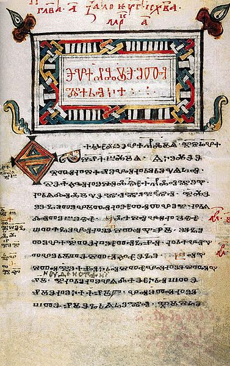
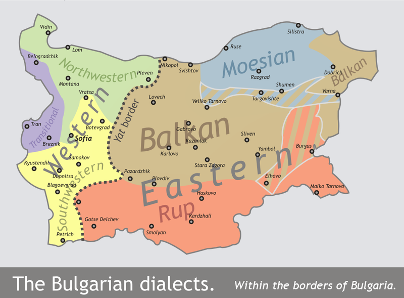
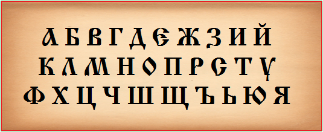
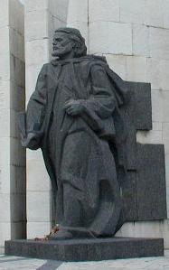

From Wikipedia, the free encyclopedia
Not to be confused with Bulgar language.
Bulgarian (български език, pronounced [ˈbɤ̞ɫɡɐrski ɛˈzik]) is an Indo-European language, a member of the Southern branch of the Slavic language family.
Bulgarian, along with the closely related Macedonian language (collectively forming the East South Slavic languages), has several characteristics that set it apart from all other Slavic languages: changes include the elimination of case declension, the development of a suffixed definite article (see Balkan language area), and the lack of a verb infinitive, but it retains and has further developed the Proto-Slavic verb system. Various evidential verb forms exist to express unwitnessed, retold, and doubtful action. According to an estimate, the number of the people around the world who speak Bulgarian as their native language as of 2004 is about 10 million.[1] Alternative sources estimate them at as high as 12 million, possibly including the non-native speakers or the Macedonian language in that number.[4][5][6][7][8][9]
| Bulgarian | |
|---|---|
| български език bălgarski ezik | |
| Native to | Bulgaria, Turkey, Serbia, Greece, Ukraine, Moldova, Romania, Albania, Kosovo, Republic of Macedonia and among emigrant communities worldwide |
| Region | The Balkans |
| Native speakers | 10 million [1] (2004)[2] |
| Language family |
|
| Writing system | Cyrillic (Bulgarian alphabet) Bulgarian Braille |
| Official status | |
| Official language in | Bulgaria European Union Mount Athos |
| Recognised minority language in | Serbia Romania (Banatian variant) Ukraine[3] Moldova |
| Regulated by | Institute for the Bulgarian language at the Bulgarian Academy of Sciences (Институт за български език към Българската академия на науките (БАН)) |
| Language codes | |
| ISO 639-1 | bg |
| ISO 639-2 | ISO 639-2 |
| ISO 639-3 | ISO 639-2 |
| Linguasphere | 53-AAA-hb < 53-AAA-h |
| This article contains IPA phonetic symbols. Without proper rendering support, you may see question marks, boxes, or other symbols instead of Unicode characters. | |
| Contents [hide] |
|---|
|
Main article: History of Bulgarian
The development of the Bulgarian language may be divided into several periods.
Early Cyrillic Alphabet (Old Bulgarian)
The Codex Zographensis is one of the oldest manuscripts in the Old Bulgarian language dated from the late 10th or early 11th century
Bulgarian was the first "Slavic" language attested in writing. As Slavic linguistic unity lasted into late antiquity, in the oldest manuscripts this language was initially referred to as языкъ словяньскъ, "the Slavic language". In the Middle Bulgarian period this name was gradually replaced by the name языкъ блъгарьскъ, the "Bulgarian language". In some cases, the name языкъ блъгарьскъ was used not only with regard to the contemporary Middle Bulgarian language of the copyist but also to the period of Old Bulgarian. A most notable example of anachronism is the Service of St. Cyril from Skopje (Скопски миней), a 13th-century Middle Bulgarian manuscript from northern Macedonia according to which St. Cyril preached with "Bulgarian" books among the Moravian Slavs. The first mention of the language as the "Bulgarian language" instead of the "Slavonic language" comes in the work of the Greek clergy of the Bulgarian Archbishopric of Ohrid in the 11th century, for example in the Greek hagiography of Saint Clement of Ohrid by Theophylact of Ohrid (late 11th century).
During the Middle Bulgarian period, the language underwent dramatic changes, losing the Slavonic case system, but preserving the rich verb system (while the development was exactly the opposite in other Slavic languages) and developing a definite article. Consequently, modern Bulgarian is about as far from Russian as Swedish is from German.[citation needed] It was influenced by its non-Slavic neighbors in the Balkan language area (mostly grammatically) and later also by Turkish, which was the official language of the Ottoman Empire, in the form of the Ottoman Turkish language, mostly lexically. As a national revival occurred toward the end of the period of Ottoman rule (mostly during the 19th century), a modern Bulgarian literary language gradually emerged that drew heavily on Church Slavonic/Old Bulgarian (and to some extent on literary Russian, which had preserved many lexical items from Church Slavonic) and later reduced the number of Turkish and other Balkan loans. Today one difference between Bulgarian dialects in the country and literary spoken Bulgarian is the significant presence of Old Bulgarian words and even word forms in the latter. Russian loans are distinguished from Old Bulgarian ones on the basis of the presence of specifically Russian phonetic changes, as in оборот (turnover, rev), непонятен (incomprehensible), ядро (nucleus) and others. As usual in such cases, many other loans from French, English and the classical languages have subsequently entered the language as well.
Modern Bulgarian was based essentially on the Eastern dialects of the language, but its pronunciation is in many respects a compromise between East and West Bulgarian (see especially the phonetic sections below). Following the efforts of some figures of the National awakening of Bulgaria (the most notable among them being Neofit Rilski and Ivan Bogorov),[10] there had been many attempts to codify a standard Bulgarian language; however, there was much argument surrounding the choice of norms. Between 1835–1878 more than 25 proposals were put forward and "linguistic chaos" ensued.[11] Eventually the eastern dialects prevailed,[12] and in 1899 the Ministry of Education officially codified[11] a standard Bulgarian language based on the Drinov-Ivanchev orthography.[12]
Main article: Bulgarian dialects
Map of the Bulgarian dialects within Bulgaria
The language is mainly split into two broad dialect areas, based on the different reflexes of the Common Slavic yat vowel (Ѣ). This split, which occurred at some point during the Middle Ages, led to the development of Bulgaria's:
The literary language norm, which is generally based on the Eastern dialects, also has the Eastern alternating reflex of yat. However, it has not incorporated the general Eastern umlaut of all synchronic or even historic "ya" sounds into "e" before front vowels – e.g. поляна (polyana) vs полени (poleni) "meadow – meadows" or even жаба (zhaba) vs жеби (zhebi) "frog – frogs", even though it co-occurs with the yat alternation in almost all Eastern dialects that have it (except a few dialects along the yat border, e.g. in the Pleven region).[14]
More examples of the yat umlaut in the literary language are:
Until 1945, Bulgarian orthography did not reveal this alternation and used the original Old Slavic Cyrillic letter yat (Ѣ), which was commonly called двойно е (dvoyno e) at the time, to express the historical yat vowel or at least root vowels displaying the ya – e alternation. The letter was used in each occurrence of such a root, regardless of the actual pronunciation of the vowel: thus, both mlyako and mlekar were spelled with (Ѣ). Among other things, this was seen as a way to "reconcile" the Western and the Eastern dialects and maintain language unity at a time when much of Bulgaria's Western dialect area was controlled by Serbia and Greece, but there were still hopes and occasional attempts to recover it. With the 1945 orthographic reform, this letter was abolished and the present spelling was introduced, reflecting the alternation in pronunciation.
This had implications for some grammatical constructions:
Sometimes, with the changes, words began to be spelled as other words with different meanings, e.g.:
In spite of the literary norm regarding the yat vowel, many people living in Western Bulgaria, including the capital Sofia, will fail to observe its rules. While the norm requires the realizations vidyal vs videli (he has seen; they have seen), some natives of Western Bulgaria will preserve their local dialect pronunciation with "e" for all instances of "yat" (e.g. videl, videli). Others, attempting to adhere to the norm, will actually use the "ya" sound even in cases where the standard language has "e" (e.g. vidyal, vidyali). The latter hypercorrection is called свръхякане (svrah-yakane ≈"over-softening").
Bulgarian is the only Slavic language whose literary standard does not naturally contain the iotated sound /jɛ/ (or its palatalized variant /ʲɛ/, except in non-Slavic foreign-loaned words). The sound is common in all modern Slavic languages (e.g. Czech medvěd /mɛdvʲɛd/ "bear", Polish pięć /pʲɛɲtɕ/ "five", Serbo-Croatian jelen /jɛlɛn/ "deer", Ukrainian немає /nemajɛ/ "there is not...", Macedonian пишување /piʃuvaɲʲɛ/ "writing", etc.), as well as some Western Bulgarian dialectal forms – e.g. орàн’е /oraɲʲɛ/ (standard Bulgarian: орaне /oranɛ/, "ploughing"),[15] however it is not represented in standard Bulgarian speech or writing. Even where /jɛ/ occurs in other Slavic words, in Standard Bulgarian it is usually transcribed and pronounced as pure /ɛ/ – e.g. Boris Yeltsin is "Eltsin" (Борис Елцин), Yekaterinburg is "Ekaterinburg" (Екатеринбург) and Sarajevo is "Saraevo" (Сараево), although Jelena Janković is "Yelena" – Йелена Янкович.
Until the period immediately following the Second World War, all Bulgarian and the majority of foreign linguists referred to the South Slavic dialect continuum spanning the area of modern Bulgaria, the Republic of Macedonia and parts of Northern Greece as a group of Bulgarian dialects.[16][17][18][19][20][21] In contrast, Serbian sources tended to label them "south Serbian" dialects.[22][23] Some local naming conventions included bolgarski, bugarski and so forth.[24] The codifiers of the standard Bulgarian language, however, did not wish to make any allowances for a pluricentric "Bulgaro-Macedonian" compromise.[25] After 1944 Communist Bulgaria and Communist Yugoslavia began a policy of making Macedonia into the connecting link for the establishment of new Balkan Federative Republic and stimulating here a development of distinct Slav Macedonian consciousness.[26] With the proclamation of the Socialist Republic of Macedonia as part of the Yugoslav federation, the new authorities also started measures that would overcome the pro-Bulgarian feeling among parts of its population and in 1945 a separate Macedonian language was codified.[27] After 1958, when the pressure from Moscow decreased, Sofia reverted to the view that the Macedonian language did not exist as a separate language. Nowadays, some linguists still consider Macedonian dialects as Bulgarian.[28][29] The current academic consensus (outside of Bulgaria) is that Macedonian is an autonomous language within the South Slavic dialect continuum.[30]
See also: Bulgarian Braille
In 886 AD, the Bulgarian Empire introduced the Glagolitic alphabet which was devised by the Saints Cyril and Methodius in the 850s. The Glagolitic alphabet was gradually superseded in later centuries by the Cyrillic script, developed around the Preslav Literary School, Bulgaria in the beginning of the 10th century.
Several Cyrillic alphabets with 28 to 44 letters were used in the beginning and the middle of the 19th century during the efforts on the codification of Modern Bulgarian until an alphabet with 32 letters, proposed by Marin Drinov, gained prominence in the 1870s. The alphabet of Marin Drinov was used until the orthographic reform of 1945 when the letters Ѣ, ѣ, called ят 'yat' or двойно е (or yet е-двойно) 'double e', and Ѫ, ѫ, called Голям юс 'big yus', голяма носовка 'big nasal sign', ъ кръстато 'crossed yer' or широко ъ 'long yer', were removed from the alphabet, reducing the number of letters to 30.
Bulgarian alphabet
With the accession of Bulgaria to the European Union on January 1, 2007, Cyrillic became the third official alphabet of the EU.
The following table gives the letters of the Bulgarian alphabet, along with the IPA values for the sound of each letter:
| Bulgarian alphabet | ISO 9 | Official transliteration | IPA* | Name of Letter | English equivalent |
|---|---|---|---|---|---|
| А а | A a | A a | /a/ or /ɐ/ | a | a as in "palm" |
| Б б | B b | B b | /b/ or /p/ | бъ | b as in "bug" |
| В в | V v | V v | /v/ or /f/ | въ | v as in "vet" |
| Г г | G g | G g | /ɡ/ or /k/ | гъ | g as in "good" |
| Д д | D d | D d | /d/ or /t/ | дъ | d as in "dog" |
| Е е | E e | E e | /ɛ/ | е | e as in "best" |
| Ж ж | Ž ž | Zh zh | /ʒ/ or /ʃ/ | жъ | s as in "treasure" |
| З з | Z z | Z z | /z/ or /s/ | зъ | z as in "zoo" |
| И и | I i | I i | /i/ | и | i as in "machine" |
| Й й | Y y | Y y | /j/ | и кратко | y as in "yes" or "yoyo" |
| К к | K k | K k | /k/ or /g/ | къ | k as in "make" |
| Л л | L l | L l | /l/ or /ɫ/ | лъ | l as in "call" or "lend" |
| М м | M m | M m | /m/ | мъ | m as in "man" |
| Н н | N n | N n | /n/ | нъ | n as in "normal" |
| О о | O o | O o | /ɔ/ or /o/ | о | o as in "order" |
| П п | P p | P p | /p/ | пъ | p as in "pet" |
| Р р | R r | R r | /r/ | ръ | r as in "restaurant" |
| С с | S s | S s | /s/ or /z/ | съ | s as in "sound" |
| Т т | T t | T t | /t/ or /d/ | тъ | t as in "top" |
| У у | U u | U u | /u/ or /o/ | y | оо as in "tool" |
| Ф ф | F f | F f | /f/ | фъ | f as in "food" |
| Х х | H h | H h | /x/ | хъ | ch as in Scottish "loch" |
| Ц ц | C c | Ts ts | /t͡s/ | цъ | ts as in "fits" |
| Ч ч | Č č | Ch ch | /t͡ʃ/ | чъ | ch as in "chip" |
| Ш ш | Š š | Sh sh | /ʃ/ | шъ | sh as in "shot" |
| Щ щ | Št št1 | Sht sht | /ʃt/ | щъ | sht as in "shtick" |
| Ъ ъ | Ă ă1 | A a | /ɤ/ or /ɐ/ | ер голям | u as in "turn" |
| Ь ь | ' 1 | Y y | /j/ or not pronounced | ер малък | soft sign: y as in canyon |
| Ю ю | Ju ju1 | Yu yu | /ju/, /jo/, /u/ or /o/ | ю | u as in "menu" |
| Я я | Ja ja1 | Ya ya | /ja/, /jɐ/, /a/ or /ɐ/ | я | ya as in "yarn" |
* See Wikipedia:IPA for Bulgarian and Macedonian for details.
1 The romanizations of these characters differ from the current version, ISO 9:1995, as it was never officially adopted as a Bulgarian standard.
Most letters in the Bulgarian alphabet stand for just one specific sound. Three letters stand for the single expression of combinations of sounds, namely щ (sht), ю (yu), and я (ya). Two sounds do not correspond to separate letters, but are expressed as the combination of two letters, namely дж (/dʒ/) and дз (/dz/). The letter ь marks the softening (palatalization) of any consonant (besides ж, ч, and ш) before the letter о, while ю and я after consonants mark the palatalization of the preceding consonant in addition to representing the vowels /u/ and /a/.[31] A letter that represents a voiced consonant can represent its voiceless counterpart and vice versa when adjacent to a voiceless or voiced consonant, respectively, or when a voiced consonant is syllable final, for example – вторник /ftornik/ – Tuesday, нож /nɔʃ/ – knife, сграда /zgradɐ/ – building, сватба /svadbɐ/ – wedding.
The names of most letters are simple representations of their phonetic values, with consonants being followed by /ɤ/ – thus the alphabet goes: /a/ – /bɤ/ – /vɤ/, etc. However, the name of the letter Й is "и-kratko" (short /i/), the name of Ъ is "er-golyam" (large Er), and the name of Ь is "er-malak" (small Er). People often refer to Ъ simply as /ɤ/.
Bulgarian is usually described as having a phonemic orthography, meaning that words are spelt the way they are pronounced. This is largely true, but does have exceptions. Three of the most cited examples are:
Main article: Bulgarian lexis
Since the time of Bulgaria's liberation in the late 19th century, the Bulgarian language has taken on a large number of words from Western European languages. All of these are transcribed phonetically into Cyrillic, e.g.:
Notable is the transliteration of many English names through German, e.g.:
In the years since the end of communism and the rise of technology, the tendency for borrowing has shifted mainly to English, where much computer-related terminology has entered and been inflected accordingly – again, in a wholly phonetic way. Examples include:
The computer-related neologisms are often used interchangeably with traditional Bulgarian words, e.g. "download" and "upload" can be simply свалям and качвам ("svalyam" & "kachvam" – "to bring down" & "to put up").
See also: Romanization of Bulgarian
The insertion of English words directly into a Cyrillic Bulgarian sentence, while frowned upon, has been increasingly used in the media. This is done for several reasons, including –
| v t e | Bulgarian language — Български език | [hide] |
|---|---|---|
| History | Old Bulgarian language (Church Slavonic) History of the Bulgarian language |  |
| Alphabet | Cyrillic script Bulgarian alphabet Orthography Romanization (Transliteration) Reforms Computer Cyrillization | |
| Major topics | Bulgarian grammar Bulgarian phonology Bulgarian lexicology Bulgarian dialects | |
| Literature | Literature (Old Slavonic literature) Ivan Vazov Petko Slaveikov Symbolism |
| v t e | Dialects of the Bulgarian language | [hide] | |
|---|---|---|---|
| Eastern | Moesian | Shumen | |
| Balkan | Central Balkan Kotel-Elena-Dryanovo Panagyurishte Pirdop Teteven Erkech Subbalkan | ||
| Rup | Strandzha Thracian Smolyan Hvoyna Chepino Paulician Zlatograd Babyak Razlog Serres-Nevrokop1 | ||
| Western | Northwestern | Byala Slatina-Pleven Vidin-Lom | |
| Southwestern | Botevgrad Vratsa Ihtiman Elin Pelin Sofia Samokov Dupnitsa Kyustendil Maleshevo-Pirin1 Solun-Kukush1 | ||
| Transitional | Tran Breznik Belogradchik | ||
| Diaspora | Banat Bulgarian Wallachian Transylvanian Former USSR Anatolian | ||
| 1 Also considered a dialect of Macedonian. | |||
| v t e | Slavic languages | [show] | |
| v t e | Bulgaria topics | [show] | |
| Categories: Languages with ISO 639-2 codeLanguages with ISO 639-1 codeBulgarian languageLanguages of BulgariaLanguages of GreeceLanguages of RomaniaLanguages of SerbiaLanguages of the Republic of MacedoniaLanguages of TurkeySouth Slavic languagesSubject–verb–object languages |